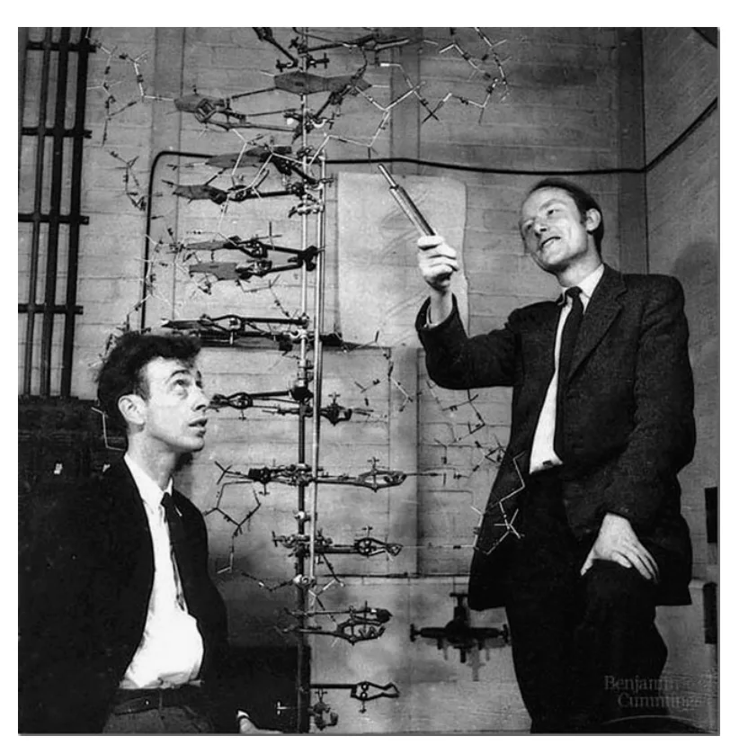

Chương 2 — Gen: Bắt đầu với DNA
Chương 2
Gen: Bắt đầu từ DNA
Việc phát hiện ra cấu trúc phân tử của DNA vào năm 1953 đủ để khẳng định thập niên 1950 là thập kỷ vĩ đại nhất trong lịch sử sinh học hiện đại. Mặc dù phát hiện này không tạo ra tác động tức thời lên khoa học thần kinh, tầm quan trọng của nó đối với mọi hệ cơ quan là điều hiển nhiên, đặc biệt khi người ta nhận ra rằng phần lớn các gen được biểu hiện trong hệ thần kinh. Cuộc chạy đua tìm kiếm cấu trúc DNA cũng trở thành một mô hình mới cho cách thức tiến hành nghiên cứu trong sinh học hiện đại, qua đó làm nổi bật những vấn đề về đạo đức trong cạnh tranh giữa các phòng thí nghiệm cũng như việc ghi nhận xứng đáng đóng góp của phụ nữ. Việc mô tả đặc tính các loại RNA khác nhau sau đó trong thập niên 1950 và đầu thập niên 1960; việc xác định các enzyme tham gia vào quá trình nguyên phân, giảm phân, phiên mã và dịch mã; việc xây dựng ‘‘tín điều trung tâm’’ của sinh học phân tử; và cuộc chạy đua giải mã di truyền đều là một phần trong kho tàng tri thức của sinh học hiện đại nói chung và khoa học thần kinh phân tử nói riêng.
Chiều sâu lịch sử của sinh học phân tử
Chúng ta mặc nhiên cho rằng việc hiểu một hệ thống sinh học bắt đầu từ kiến thức về các gen được biểu hiện bởi các tế bào trong hệ thống đó, cũng như về các RNA và protein mà những gen ấy mã hóa dưới dạng phân tử cấu trúc, enzyme và thụ thể. Vào giữa thế kỷ XIX, khi sinh học hiện đại mới khởi đầu, ý tưởng này mới chỉ xuất hiện như một viễn kiến xa xôi trong tâm trí của những nhà giải phẫu học đầu tiên dùng kính hiển vi để mô tả tế bào cơ thể và những nhà sinh lý học đầu tiên dùng dụng cụ điện để ghi lại hoạt động thần kinh.
Dù có thể còn xa xôi, nhưng khi tra cứu các văn bản thời đó, ta thấy viễn kiến ấy đã được trình bày với niềm đam mê sâu sắc và sự sáng rõ đáng kinh ngạc. (Đối với độc giả hiện đại, các trích dẫn từ nguồn tài liệu cổ hơn này có thể được tìm thấy trong ‘‘Foundations of the Neuron Doctrine’’ (Shepherd, 1991) và các nguồn dễ tiếp cận khác có kèm bình luận theo góc nhìn hiện đại). Niềm đam mê ấy đặc biệt đúng với những người tiên phong trong điện sinh lý học, như Cranefield (1957) đã thuật lại. Emil Du Bois-Reymond là một trong số họ. Cuốn sách đầu tiên về hoạt động điện của các sợi thần kinh (Du Bois-Reymond, 1848) đã đặt ra những nguyên lý mới cần thiết:
Phương pháp đích thực . . . nằm . . . ở nỗ lực xác định những mối liên hệ cơ bản của các hiện tượng tự nhiên ẩn dưới cấu trúc toán học của các mối quan hệ giữa chúng. . .. Chắc chắn rằng . . . sinh lý học . . . sẽ hòa tan vào vật lý hữu cơ và hóa học hữu cơ.
(Shepherd, 1991, 31)
Theo cách tương tự, cuốn sách giáo khoa mô học đầu tiên (Kolliker, 1852), lần đầu tiên mô tả các tế bào của cơ thể, đã tiên đoán rằng khi ‘‘các phân tử cấu thành nên màng tế bào, sợi cơ, sợi trục của thần kinh, v.v., được phát hiện . . . một kỷ nguyên mới sẽ mở ra cho Mô học’’ dựa trên một ‘‘lý thuyết phân tử’’ và một ‘‘định luật phát sinh tế bào’’ (trong Shepherd, 1991, 31).
Đọc những văn bản này là nhận ra rằng nền sinh học phân tử mà ngày nay ta coi là hiển nhiên vốn đã là mục tiêu của các nhà sinh học từ rất lâu. Những bước tiến hướng tới tri thức về gen là một phần đầy hứng khởi của cuộc đấu tranh vì mục tiêu đó. Câu chuyện dẫn đến việc phát hiện ra gen đang nhanh chóng trở thành một phần truyền thuyết của cuộc đấu tranh ấy (ví dụ, xem Passarge, 1995). Dù chủ yếu đề cập đến cơ thể nói chung, câu chuyện này cũng chứa đựng những manh mối đầu tiên về vai trò của gen trong hệ thần kinh. Chúng tôi sẽ điểm lại ngắn gọn sự hình thành các khái niệm bắt đầu từ thế kỷ XIX, trước khi tập trung vào những khía cạnh liên quan trực tiếp nhất đến hệ thần kinh.
Gen và thuật ngữ về gen
Sẽ rất hữu ích nếu ngay từ đầu ta có một số kiến thức nền về cách các thuật ngữ và khái niệm hiện đại của chúng ta được hình thành.
Trước hết, độc giả hẳn đã nhận thấy việc sử dụng cụm từ ‘‘phát sinh tế bào’’ (cell genesis) trong trích dẫn trước đó, phản ánh định nghĩa của từ này là ‘‘nguồn gốc’’ (từ tiếng Hy Lạp gen, ‘‘tạo ra’’), như trong sách Sáng Thế (Genesis). Dạng tính từ là ‘‘genetic’’. Những thuật ngữ này ban đầu không mang ý nghĩa khoa học mà được dùng trong văn chương phổ thông đầu thế kỷ XIX để chỉ ‘‘lịch sử phát sinh’’ của thơ ca hay ‘‘sự phát triển phát sinh’’ của các từ loại. Một ‘‘ngụy biện di truyền/phát sinh’’ (genetic fallacy) là ngụy biện ‘‘cho rằng một quan điểm bị bác bỏ khi nguồn gốc nhân quả của nó được phơi bày’’ (Từ điển tiếng Anh Oxford, 1901). Trong khoa học, cuốn A Text-book of Physiology (1897) của Foster viết rằng ‘‘Xét ở khía cạnh phát sinh (genetic), tủy sống là một chuỗi các đốt gắn kết với nhau’’, nơi mà ngày nay có lẽ chúng ta sẽ gọi là khía cạnh ‘‘phát triển’’ (developmental).
Darwin, trong Nguồn gốc các loài (Origin of Species, 1859), đã nhắc đến ‘‘những mối liên hệ phát sinh’’ (genetic connexions — tức nguồn gốc chung) xuất hiện giữa các thành hệ địa chất tách biệt nhau.
Những bước đầu tiên hướng tới hiểu biết về gen như cách chúng ta hiểu ngày nay diễn ra vào cuối thế kỷ XIX (tài liệu tham khảo cho phần kiến thức nền này có thể tìm thấy trong các sách giáo khoa di truyền học [xem Passarge, 1995] và trực tuyến trên Wikipedia [Lịch sử Di truyền học] cũng như các trang Wikipedia theo tên tác giả). Các sợi bắt màu trong tế bào chất của tế bào đang phân chia trên mô nhuộm đã được Walther Flemming mô tả vào năm 1879. Chúng được Wilhelm von Waldeyer ở Đức đặt tên là ‘‘nhiễm sắc thể’’ (chromosomes, từ tiếng Hy Lạp chrom, ‘‘màu sắc’’, và som, ‘‘thể’’) vào năm 1888. Sự phân chia tế bào thành hai tế bào con như xảy ra ở tế bào soma được Flemming gọi là ‘‘nguyên phân’’ (mitosis). Các giai đoạn của quá trình phân chia tế bào được Eduard Strasburger đặt tên là ‘‘kỳ đầu’’ (prophase), ‘‘kỳ giữa’’ (metaphase) và ‘‘kỳ sau’’ (anaphase); ông cũng đưa ra thuật ngữ ‘‘giảm phân’’ (meiosis) cho quá trình phân chia tế bào dẫn đến các tế bào con chỉ chứa một chiếc trong cặp nhiễm sắc thể, như xảy ra ở tế bào mầm (tóm tắt trong Strasburger et al., 1894). Những nghiên cứu này là một phần của sự trỗi dậy của tế bào học cuối thế kỷ XIX và diễn ra hoàn toàn không biết đến, hay không có liên hệ gì với, các nghiên cứu của Gregor Mendel về đặc điểm di truyền ở đậu Hà Lan trong thập niên 1870.
Vào năm 1900, ‘‘các định luật tái tổ hợp di truyền’’ của Mendel đã được Correns, Tschermak và DeVries tái phát hiện (Passarge, 1995). Đề xuất của Mendel rằng di truyền là kết quả của ‘‘các nhân tố độc lập’’ đã dẫn đến việc William Bateson ở Anh năm 1906 gợi ý thuật ngữ ‘‘di truyền học’’ (genetics) như một thuật ngữ sinh học chuyên biệt cho việc nghiên cứu các quy luật di truyền. Tiếp bước Bateson, Wilhelm Johannsen ở Đan Mạch năm 1909 đề xuất thuật ngữ ‘‘gen’’ (gene) cho ‘‘các nhân tố độc lập’’ đó, cũng như ‘‘kiểu gen’’ (genotype) cho tổ hợp các gen ở một cá thể và ‘‘kiểu hình’’ (phenotype, từ tiếng Hy Lạp phainen, ‘‘biểu hiện ra’’) cho tổ hợp các đặc điểm do gen và sự tương tác của chúng với môi trường tạo nên (xem Ryan et al., 2000).
Việc nhiễm sắc thể là vật mang gen đã được công nhận thông qua các nghiên cứu trên ruồi giấm Drosophila melanogaster, do Thomas Hunt Morgan khởi xướng tại Hoa Kỳ. Chu kỳ sinh sản nhanh của Drosophila là yếu tố then chốt giúp có thể phân tích các cơ chế di truyền. Năm 1915, Morgan và các cộng sự đề xuất ‘‘thuyết nhiễm sắc thể về di truyền’’, và học thuyết này dần được chấp nhận.
Các định luật Mendel chi phối sự di truyền của các bệnh chuyển hóa ở người lần đầu tiên được Garrod phát hiện và trình bày trong cuốn sách Inborn Errors of Metabolism năm 1909. Công trình này là nghiên cứu đầu tiên chỉ ra sự tham gia của các cơ chế di truyền vào các bệnh ảnh hưởng đến hệ thần kinh và nhận ra rằng có sự khác biệt về gen cũng như các thành phần sinh hóa giữa những cá thể bình thường.
Những biến đổi trong gen được gọi là ‘‘đột biến’’ (mutations, từ tiếng Latin mutatio, ‘‘thay đổi’’). H. J. Muller đã chứng minh vào năm 1927 rằng đột biến có thể được gây ra bởi tia X. Trong Chiến tranh Thế giới thứ hai, người ta phát hiện đột biến có thể được gây ra bởi hóa chất: khí mù tạt bởi Lotte Auerbach và Rab Robson ở Anh, và urethane bởi Friedrich Oehlkers ở Đức (tóm tắt trong Beale, 1993). Điều này đã cung cấp những công cụ mạnh mẽ để khảo sát các cơ chế di truyền.
Cũng giống như đậu Hà Lan của Mendel mở ra một kỷ nguyên và ruồi giấm của Morgan mở ra một kỷ nguyên khác, việc đưa vào sử dụng các vi sinh vật, với cấu tạo đơn bào và chu kỳ sinh sản nhanh, đã tạo cho di truyền học một bước tiến mạnh mẽ. Dù các nghiên cứu trên vi khuẩn bắt đầu từ thập niên 1920, các nghiên cứu trên nấm Neurospora của Beadle và Tatum ở Hoa Kỳ mới là những công trình đầu tiên được công nhận rộng rãi và dẫn tới khái niệm ‘‘một gen một enzyme’’. Năm 1946, Tatum và Lederberg chứng minh rằng thông tin di truyền có thể được trao đổi giữa các chủng vi khuẩn đột biến khác nhau. Đây là bằng chứng đầu tiên cho sự tái tổ hợp di truyền.
Mặc dù những nghiên cứu này đã đặt di truyền học đi đúng hướng, người ta vẫn chưa biết gen được cấu tạo từ chất gì. Các nhà vật lý bị thu hút bởi thách thức này. Niels Bohr, nhân vật trung tâm trong cuộc cách mạng vật lý lượng tử thập niên 1920, đã dùng khái niệm ‘‘tính bổ sung’’ (complementarity) của mình để suy đoán về bản chất vật lý của vật chất sinh học (xem Shepherd, 2000). Một nhà vật lý lượng tử khác, Erwin Schro¨dinger, tác giả của các phương trình sóng cũng như con mèo nổi tiếng, đã xuất bản một cuốn sách nhỏ năm 1945 nhan đề What Is Life? (Sự sống là gì?), khơi dậy sự quan tâm sâu rộng trong các ngành khoa học cũng như công chúng đối với bài toán về vật chất di truyền. Nhiều nhà vật lý từng nhắc đến việc cách trình bày vấn đề cơ sở sinh học của tính di truyền trong cuốn sách này, dù còn chứa những sai sót về mặt sinh học, lại rất dễ tiếp cận và đã thôi thúc họ chuyển sang sinh học phân tử. Tôi vẫn nhớ rất rõ tác động mạnh mẽ đối với một sinh viên trẻ khi đọc những suy tư sắc sảo ấy về bản chất sinh hóa và vật lý khả dĩ của gen.
Con đường dẫn đến Schrodinger bắt đầu từ việc phát hiện ra các virus lây nhiễm vi khuẩn vào đầu thế kỷ XX bởi Frederick Twort ở Vương quốc Anh và nhà khoa học người Pháp gốc Canada Felix d’Herelle, người đã đặt tên cho chúng là ‘‘thực khuẩn thể’’ (bacteriophage — ‘‘kẻ ăn vi khuẩn’’). Từng có sự quan tâm lớn trong việc phát triển thực khuẩn thể làm phương tiện chống nhiễm trùng, cho đến khi kháng sinh tỏ ra hiệu quả hơn vào thập niên 1940. Tuy nhiên, thực khuẩn thể lại có tác động lớn hơn nhiều đối với khoa học. Summers (1999), trong cuốn tiểu sử về d’Herelle, xác định khởi nguồn của sinh học phân tử gắn liền với việc phát hiện ra thực khuẩn thể. Con đường đó sau này dẫn tới Max Delbru¨ck. Khi còn là một sinh viên vật lý trẻ, Delbru¨ck đã được truyền cảm hứng từ một bài giảng của Bohr về khái niệm tính bổ sung trong vật lý để đi tìm bằng chứng cho khái niệm này trong sinh học. Năm 1939, Ellis và Delbruck đưa thực khuẩn thể vào làm công cụ thúc đẩy nghiên cứu di truyền, dẫn đến sự hình thành nhóm nghiên cứu thực khuẩn thể (phage group) và những bước khởi đầu của sinh học phân tử hiện đại – đồng thời thôi thúc Schrodinger viết cuốn sách của mình.
Những manh mối dẫn tới DNA
Bằng chứng thực nghiệm về bản chất của gen xuất hiện lần đầu vào năm 1928 khi Frederick Griffith ở Anh báo cáo về sự biến nạp di truyền giữa hai chủng phế cầu khuẩn (pneumococcus). Phát hiện này vẫn nằm trong tình trạng nghi vấn cho đến khi Oswald Avery, Colin MacLeod và Maclyn McCarty (1943) ở Hoa Kỳ chứng minh rằng ‘‘nhân tố biến nạp’’ là một acid nucleic mạch dài, gọi là ‘‘deoxyribonucleic acid’’ (DNA). Người ta thường nói rằng nghiên cứu nổi tiếng hiện nay này đã ít được chú ý trong nhiều năm. Tuy nhiên, có rất nhiều lời chứng từ những người đương thời cho thấy các nhà khoa học quan tâm đến bản chất của vật chất di truyền đều biết rất rõ về các thí nghiệm ấy. Cũng tồn tại mối lo ngại kéo dài về khả năng có tạp nhiễm protein trong các mẫu chế phẩm. Bằng chứng củng cố đã được Hershey và Chase đưa ra vào năm 1952, khẳng định rằng gen thực sự chính là DNA. Người ta nhận ra rằng cấu trúc hóa học của DNA sẽ hé lộ những cơ chế được tìm kiếm bấy lâu của vật chất di truyền.
Môi trường nghiên cứu mới của thập niên 1950
‘‘Chén thánh’’ này đã thôi thúc các nhà hóa sinh tại nhiều phòng thí nghiệm ở cả hai bờ Đại Tây Dương. Đó là một thời điểm thuận lợi. Chiến tranh Thế giới thứ hai (1939–1945) vừa mới kết thúc. Việc tổ chức nghiên cứu khoa học quy mô lớn một cách hiệu quả ở Hoa Kỳ và Vương quốc Anh đã đóng vai trò quyết định đối với thắng lợi của phe Đồng minh, nổi bật nhất là trong việc phát triển radar và bom nguyên tử. Tại Hoa Kỳ, dưới sự lãnh đạo của Vannevar Bush cùng các nhà khoa học và chính trị gia sáng suốt khác, mô hình tổ chức khoa học quy mô lớn này được chuyển đổi trong thời bình thành sự gia tăng vượt bậc nguồn đầu tư của chính phủ liên bang vào nghiên cứu cơ bản, không chỉ trong khoa học vật lý mà còn trong khoa học sức khỏe thông qua sự mở rộng nhanh chóng của Viện Y tế Quốc gia (NIH). Tại Vương quốc Anh, điều này dẫn đến sự gia tăng hỗ trợ cho cả các phòng thí nghiệm truyền thống lẫn mới thành lập về vật lý nguyên tử, và dẫn đến việc thành lập Hội đồng Nghiên cứu Y khoa (Medical Research Council) nhằm tài trợ cho nghiên cứu cơ bản trong các lĩnh vực y tế khác nhau.
Tại Hoa Kỳ, chiến lược tài trợ then chốt là cấp kinh phí nghiên cứu trên cơ sở cạnh tranh, trao trực tiếp cho ‘‘chủ nhiệm đề tài’’ (principal investigator) nộp đơn xin tài trợ thay vì trao cho trưởng bộ môn hay chỉ cho các giáo sư thâm niên. Điều này đã tối đa hóa tiềm năng sáng tạo của các nhà nghiên cứu trẻ và cho phép họ tự do quyết định chiến lược nghiên cứu cụ thể của riêng mình. Ngoài ra, các quỹ học bổng cũng được cấp cho nghiên cứu sinh sau đại học và nghiên cứu sinh sau tiến sĩ để theo đuổi nghiên cứu cùng người hướng dẫn do chính họ lựa chọn, với rất ít điều kiện ràng buộc.
Sự hỗ trợ gia tăng này cung cấp nguồn kinh phí mà theo tiêu chuẩn hiện nay có thể coi là khiêm tốn; nhưng nó đã tạo ra một môi trường nghiên cứu nơi những phòng thí nghiệm xuất sắc nhất có đủ cơ sở vật chất cần thiết và, quan trọng hơn, có quyền tự do theo đuổi những dự án mà ngày nay nhiều dự án trong số đó sẽ bị coi là rủi ro cao và do đó không thể xin được tài trợ.
Cuộc chạy đua tới DNA
Chúng tôi đã dành một đoạn rẽ nhánh này để mô tả sự bùng nổ nguồn tài trợ cho nghiên cứu cơ bản được tự do theo đuổi trong giai đoạn hậu Chiến tranh Thế giới thứ hai bởi chính điều đó đã tạo ra nền tảng thiết yếu cho cuộc chạy đua tìm kiếm DNA (cũng như cho nghiên cứu y sinh nói chung tại Hoa Kỳ).
Mặc dù nhiều phòng thí nghiệm hóa sinh danh tiếng đã tham gia cuộc đua, giải thưởng lại thuộc về hai nghiên cứu sinh sau tiến sĩ: James Watson đến từ Hoa Kỳ và Francis Crick đến từ Vương quốc Anh. Watson sinh năm 1928 và, khi còn là một thần đồng, từng là một trong những ‘‘whiz kids’’ trên chương trình phát thanh cùng tên vào cuối thập niên 1930. Sau đó ông trở thành một nghiên cứu sinh sau tiến sĩ trẻ tuổi xuất sắc ở độ tuổi đầu đôi mươi, nhận được học bổng nghiên cứu hóa sinh và đi qua nhiều phòng thí nghiệm ở châu Âu để tìm kiếm một đề tài thú vị. Trong khi đó, Crick, sinh năm 1919, được đào tạo về vật lý và trở thành một nghiên cứu sinh sau tiến sĩ ‘‘lớn tuổi’’, thường lui tới phòng thí nghiệm vật lý Cavendish danh tiếng dưới sự dẫn dắt của Lawrence Bragg tại Đại học Cambridge, cũng đang tìm kiếm một việc gì đó kích thích trí tuệ để làm. Hai người kết hợp với nhau và quyết định sẽ thử giành chiến thắng trong cuộc đua khám phá cấu trúc DNA.
Câu chuyện giờ đây đã trở thành huyền thoại. Dựa trên dữ liệu thu được từ nhiều cộng tác viên, đặc biệt nhất là dữ liệu tinh thể học tia X rất sớm về cấu trúc DNA của một nhà nghiên cứu trẻ khác là Rosalind Franklin tại phòng thí nghiệm của Maurice Wilkins ở London, Watson và Crick đã dựng nên một mô hình vật lý cho thấy DNA gồm hai chuỗi xoắn bổ sung quấn vào nhau của các cặp bazơ khớp đôi, một purine và một pyrimidine (phần nucleic), gắn với các phân tử đường ở phía ngoài (phần deoxyribose) và một nhóm monophosphate (Hình 2.1).
Họ công bố báo cáo của mình trong một bài báo ngắn trên tạp chí Nature số ra ngày 25 tháng 4 năm 1953; đi kèm là một bài báo của Franklin và Wilkins về tinh thể học. Có những cuốn sách và bài báo nổi tiếng nhờ câu mở đầu; bài báo của họ lại nổi tiếng nhờ câu kết (trang 737): ‘‘Chúng tôi không thể không nhận thấy rằng sự bắt cặp đặc hiệu mà chúng tôi vừa giả định ngay lập tức gợi ý một cơ chế sao chép khả dĩ cho vật chất di truyền.’’ (Xem Phụ lục 2.1.)
Trước mức độ truyền thông rầm rộ dành cho ngay cả những tiến bộ khá khiêm tốn ngày nay, thật thú vị khi nhìn lại cách bài báo trọng đại này đến với công chúng. Khách quen tại quán rượu Eagle Pub ở Cambridge đã nghe về nó ngay trong ngày mô hình được hoàn thành, vì vào cuối ngày hôm đó Watson và Crick đã đi bộ sang cùng các đồng nghiệp trong phòng thí nghiệm để nâng cốc ăn mừng và tuyên bố với tất cả thực khách rằng họ đã ‘‘khám phá ra bí mật của sự sống’’. Tuy nhiên, tin tức này đã không đến được với công chúng Hoa Kỳ cho tới 6 tuần sau đó, khi tờ New York Times đăng một mẩu tin một cột ở trang trong cho biết hai nhà khoa học ở Anh đã báo cáo về bản chất hóa học của gen (xem New York Times, 1953 Phụ lục 2.2).
Đó là một mùa xuân trọng đại: đỉnh Everest được chinh phục, Nữ hoàng Elizabeth đăng quang, Stalin qua đời, tạp chí Playboy ra đời. Sự kiện lớn nhất trong tất cả—bí mật sự sống được giải mã—hầu như chẳng gây ra một gợn sóng nào (Ridley, 2006, 73).
Ở góc độ cá nhân, câu chuyện về cuộc đua này lần đầu được kể lại trong cuốn The Double Helix (1968) của Watson, tiếp theo là What Mad Pursuit (1988) của Crick, Francis Crick: Discoverer of the Genetic Code (2006) của Ridley, và nhiều cuốn sách, hồi ký khác, trong đó đầy đủ nhất là cuốn The Eighth Day of Creation: Makers of the Revolution in Biology (1996) của Horace Freeland Judson.
Những báo cáo ban đầu về phát hiện DNA, và đặc biệt là cuốn sách của Watson, đã có ảnh hưởng lớn đến cách thức tiến hành khoa học sinh học, bao gồm cả khoa học thần kinh, kể từ thời điểm đó (dù cuốn sách ra đời sau thập niên
1950). Một phần là vì nó mang lại một góc nhìn mới về việc làm khoa học, khắc họa nó như một cuộc đua đầy phấn khích giữa những người tài năng và những đồng nghiệp đương thời chậm chạp hoặc ngơ ngác, thay vì một bản tường thuật khiêm tốn về từng bước tiến tới chân lý. Sự chuyển dịch khỏi đồng phục phòng thí nghiệm gồm áo blouse trắng, com-lê và cà vạt sang áo phông và giày thể thao cũng bắt đầu từ thời kỳ đó.
Cuốn sách cũng đặt ra những câu hỏi về đạo đức khi sử dụng dữ liệu của người khác. Bản thân Watson và Crick không tự làm thí nghiệm nào mà thu thập các gợi ý, hiểu biết thực nghiệm và dữ liệu then chốt từ những người khác. Dữ liệu tinh thể học tiên phong của Rosalind Franklin, vốn thiết yếu cho việc xây dựng mô hình cấu trúc, đã được đưa cho họ mà bà không hề hay biết. Về phần mình, Franklin đã rộng lượng công nhận tính đúng đắn và vẻ đẹp của cấu trúc cuối cùng và trở thành bạn của cả hai người trong những năm trước khi bà qua đời sớm.
Cuối cùng, việc cuốn sách mô tả các tương tác với Franklin đã làm nổi bật những bất công đối với phụ nữ trong cuộc đấu tranh giành cơ hội bình đẳng và sự công nhận trong nghiên cứu phòng thí nghiệm. Bà đã trở thành một biểu tượng cho cuộc đấu tranh vẫn đang tiếp diễn này (xem Maddox, 2002). Việc bà không được phép bước vào phòng ăn trưa tại King’s College nơi bà làm việc để ngồi cùng các đồng nghiệp nam cho thấy khoảng cách giữa thời đại đó và thời đại của chúng ta. Liệu thời đại của chúng ta có bị nhìn lại với một khoảng cách tương tự sau 50 năm nữa không?
Cũng cần lưu ý rằng việc khám phá ra DNA là kết quả của cả thực nghiệm lẫn lý thuyết. Dữ liệu thực nghiệm là thiết yếu, nhưng mô hình cũng vậy, vì nó chứng minh rằng phân tử này có thể tồn tại ở dạng chuỗi xoắn kép quấn vào nhau như giả định. Đối với những ai tin rằng tiến bộ trong sinh học chỉ phụ thuộc vào dữ liệu thu được từ thực nghiệm, câu chuyện DNA là một sự bác bỏ mạnh mẽ. Chính sự kích thích trí tuệ từ việc giải mã cấu trúc bằng mô hình đã giúp đạt tới đích.
(Tôi từng nghe Crick nói chuyện về công trình này tại Oxford năm 1962. Có người hỏi ông nhìn nhận tương lai nào cho việc xây dựng mô hình. Ông nghĩ rằng có lẽ nó đã hoàn thành sứ mệnh chính của mình. Khi đó đồng nghiệp của ông là Max Perutz đã giải được cấu trúc của hemoglobin, cũng được minh họa bằng mô hình. Tuy nhiên, ở phía trước, vượt ra ngoài những mô hình vật lý lắp ghép công phu ấy, là các mô hình phân tử được dựng bằng máy tính, ngày nay đã trở thành một phần không thể thiếu của sinh học phân tử. Cũng có người hỏi Crick bí quyết làm việc nhóm trong phòng thí nghiệm, và ông đáp: ‘‘Thành công phụ thuộc vào việc không khách sáo với nhau—dù người Nhật có thể là một ngoại lệ’’!
Bước tiến vũ bão của sinh học vào kỷ nguyên phân tử đã được khắc họa sống động đối với tôi vào thời điểm đó qua một bài giảng của Peter Medawar tại Oxford khoảng năm 1961, trong đó khi điểm lại những tiến bộ gần đây về cơ sở tế bào và phân tử của việc ghép mô, ông đã buột miệng nhận xét: ‘‘Tất nhiên, không còn ai dùng thuật ngữ ‘nguyên sinh chất’ (protoplasm) nữa.’’ Có một tiếng thở hắt nghe rõ từ phía khán giả. Trong phần hỏi đáp, một người rụt rè giơ tay và băn khoăn không biết nguyên sinh chất liệu có còn giá trị sử dụng nào không. Rõ ràng thuật ngữ đó vẫn nằm trong vốn từ vựng tại Oxford! Medawar đáp lại rằng ông không có ý xúc phạm ai, nhưng có lẽ đã đến lúc phải thay đổi.)
DNA hoạt động như thế nào?
Mặc dù nhiều nhà sinh học chấp nhận cấu trúc DNA là phát hiện có khả năng quan trọng nhất trong sinh học kể từ Darwin, nhưng nó ít tạo ra tác động thực tiễn tức thời đối với cả giới sinh học lẫn công chúng bởi vì, dù nguyên lý nhân đôi nhờ bắt cặp các bazơ là rõ ràng, cách thức quá trình đó thực sự diễn ra vẫn hoàn toàn là một bí ẩn. Do đó, báo cáo đầu tiên chỉ là sự khởi đầu chứ không phải điểm kết thúc, điều vốn đúng với hầu hết các khám phá vĩ đại trong khoa học. Nhiều năm lao động miệt mài vẫn còn ở phía trước. Thực tế, cấu trúc xoắn kép gồm hai mạch định hướng ngược chiều nhau chỉ được xác nhận dứt khoát vào đầu thập niên 1980 (Crick, 1988).
Những bước phát triển trong thập niên 1950 bao gồm sự xóa nhòa ranh giới và tái định hình các ngành khoa học truyền thống, một dấu ấn khác của cuộc cách mạng đang diễn ra vốn vẫn lặp lại kể từ đó. Một trong những thay đổi này liên quan đến sự dung hợp mới giữa nghiên cứu acid nucleic với enzyme học và hóa sinh. Điều này dẫn đến một bước tiến lớn vào năm 1951, khi Sanger và Tuppy tại Vương quốc Anh kết hợp các phương pháp này để xác định trình tự amino acid của insulin. (Đây là lần giải trình tự đầu tiên của một protein hoạt động như một hormone cơ thể, mà sau này được chứng minh là một hợp chất có hoạt tính thần kinh tác động trong não; xem Chương 3 và Chương 11. Hormone peptide là hormone chống bài niệu được giải trình tự vào năm 1953; xem Chương 11.) Kết quả cho thấy một protein bao gồm một trình tự đơn giản các amino acid (còn gọi là ‘‘gốc’’ amino acid, tức phần còn lại sau khi các phần của phân tử được dùng để tạo liên kết giữa chúng). Điều này ngụ ý một sự tương quan giữa trình tự các cặp bazơ trong DNA và trình tự các amino acid trong protein. Hơn nữa, khi đó người ta đã biết rằng DNA nằm trong nhân tế bào còn protein được tổng hợp ở tế bào chất. Vì vậy, các bài toán đặt ra là: DNA nhân đôi trong nhân tế bào như thế nào? Thông tin trong trình tự DNA tồn tại dưới dạng nào? Thông tin này được truyền ra tế bào chất bằng cách nào? Và nó được đọc ra như thế nào để tạo thành protein?
Khám phá ra RNA
Từ rất lâu trước khi cấu trúc DNA được hé lộ, nhiều hướng nghiên cứu đã bắt đầu dẫn tới việc xác định vai trò của ribonucleic acid (RNA) trong các chức năng của tế bào (xem bản tóm tắt và các tài liệu tham khảo sớm trong Gall et al., 1981).
Bắt đầu từ công trình của Garnier ở Pháp vào khoảng năm 1900, một loạt nghiên cứu từ nhiều phòng thí nghiệm đã chứng minh sự hiện diện của một chất ưa kiềm trong tế bào chất của các tế bào tuyến, chất này có liên quan đến việc tạo ra các sản phẩm bài tiết của tế bào. Vào thập niên 1930, chất này được chứng minh chính là RNA. Đến đầu thập niên 1940, người ta giả thuyết rằng RNA đóng vai trò quan trọng đối với quá trình tổng hợp protein. Nhiều phương pháp khác nhau đã được sử dụng để phân lập nó và mô tả các chức năng của nó. Những phương pháp này đóng vai trò to lớn trong sự phát triển của hóa sinh tế bào.
Bằng cách ly tâm tốc độ cao các thành phần tế bào, RNA được tìm thấy trong phân đoạn ‘‘microsome’’ (Claude, 1943). Những nghiên cứu sớm về vi cấu trúc tế bào bằng kính hiển vi điện tử (EM) cho thấy tế bào chất chứa một mạng lưới màng, được Keith Porter (1953) đặt tên là ‘‘lưới nội chất (ER)’’, và có lưới nội chất trơn cũng như lưới nội chất hạt, loại sau có gắn các hạt nhỏ (Palade, 1955a,b). Nhiều công trình sử dụng RNA đánh dấu phóng xạ cuối cùng đã nối kết hai hướng nghiên cứu này lại với nhau, chứng minh rằng các microsome chứa những hạt giàu RNA và chúng tương đương với các hạt quan sát được trên kính hiển vi điện tử.
Công trình này đã khắc họa rõ nét tác động của kính hiển vi điện tử trong việc mở ra kỷ nguyên mới cho sinh học tế bào và cách thức mà vi cấu trúc có thể được đối chiếu với các phương pháp hóa sinh cổ điển như phân đoạn dưới tế bào.
Các phương pháp mới cho phép tấn công trực diện vào câu hỏi: lưới nội chất hạt tổng hợp protein như thế nào?
Các loại RNA và quá trình tổng hợp protein
Trong số những thành quả công nghệ mà Chiến tranh Thế giới thứ hai mang lại cho sinh học có sự ra đời của các đồng vị đánh dấu phóng xạ, đặc biệt là 14C. Cách tiếp cận này đã được ứng dụng rộng rãi trong sinh học, bao gồm cả khoa học thần kinh, như chúng ta sẽ thấy (ví dụ, công trình về tuần hoàn não ở Chương 13).
Một mục tiêu sớm hiển nhiên là truy dấu cách các amino acid đánh dấu phóng xạ được lắp ghép thành protein. Người ta sớm nhận ra rằng để ứng dụng cách tiếp cận này hiệu quả nhất, cần có các hệ thống tổng hợp protein phi tế bào. Các hệ thống này được phát triển vào khoảng năm 1950. Đến năm 1954, ngay sau khi cấu trúc xoắn kép của DNA được phát hiện, người ta đã có thể ‘‘tách hệ thống tổng hợp protein thành bốn thành phần: amino acid, một thành phần cung cấp ATP, một chức năng enzyme hòa tan, và một phân đoạn microsome’’ (Siekevitz và Zamecnik, 1981, 54s). Dường như một enzyme riêng biệt trong phân đoạn hòa tan là cần thiết để hoạt hóa từng amino acid, và vị trí trùng hợp amino acid thành protein được chứng minh là diễn ra ở các microsome. Điều này dẫn đến việc nhiều nhóm nghiên cứu xác định ra RNA vận chuyển (tRNA) vào năm 1958. Người ta nhận ra rằng các tRNA hoạt động như những phân tử ‘‘tiếp hợp’’ (adapter) mang một bộ ba mã hóa cho mỗi amino acid, đúng như giả thuyết do Crick đưa ra trong cùng năm đó. Quá trình tổng hợp protein diễn ra ở đâu? Nghiên cứu sâu hơn về các hạt microsome bằng siêu ly tâm chỉ ra rằng những hạt chứa cả RNA và protein chính là các hạt nhìn thấy dưới kính hiển vi điện tử và dường như tham gia vào quá trình tổng hợp protein. Thuật ngữ ‘‘ribosome’’, phản ánh hàm lượng RNA của chúng, đã được đề xuất cho các hạt này; và RNA trong ribosome được gọi là RNA ribosome (‘‘rRNA’’). Tuy nhiên, để hiểu mối quan hệ giữa rRNA và sự tổng hợp protein, cần phải xác định thêm một nhân tố nữa trong dây chuyền sản xuất.
Trong khi rRNA ổn định về mặt hóa sinh (tức có tốc độ luân chuyển chậm), bằng chứng đã được tìm thấy về một loại RNA khác không bền (có tốc độ luân chuyển nhanh) bằng cách nào đó tham gia vào quá trình tổng hợp protein (Astrachan và Volkin, 1958). Sự hội tụ của các công trình từ phòng thí nghiệm của Jacob và Monod ở Pháp, Brenner và Meselson ở Vương quốc Anh, cùng Watson và Gilbert ở Hoa Kỳ đã cung cấp bằng chứng cho một loại RNA có tốc độ luân chuyển nhanh khi nó liên kết rồi tách khỏi hạt ribosome. Loại này được gọi là ‘‘RNA thông tin’’ (mRNA). Quá trình chuyển đổi thông tin từ DNA sang mRNA được gọi là ‘‘phiên mã’’ (transcription). Quá trình chuyển đổi thông tin từ mRNA thành protein, thông qua tương tác giữa tRNA và mRNA, được gọi là ‘‘dịch mã’’ (translation).
Tại một hội nghị năm 1957, trong bài nói chuyện ‘‘Về tổng hợp protein’’ (On Protein Synthesis) trước Hội Sinh học Thực nghiệm họp tại Canterbury, Anh, Crick đã điểm lại các bằng chứng về dòng thông tin một chiều từ DNA đến RNA rồi đến protein. Trên cơ sở lý thuyết, ông đưa ra hai tiên đoán nền tảng. ‘‘Giả thuyết trình tự’’ (sequence hypothesis) cho rằng trình tự các bazơ trong DNA quy định trình tự các amino acid trong protein, và đó là toàn bộ thông tin cần thiết để protein cuộn gập thành cấu trúc không gian ba chiều của nó. Giả thuyết ‘‘tín điều trung tâm’’ (central dogma) cho rằng ‘‘một khi ‘thông tin’ đã đi vào protein, nó không thể thoát ra ngoài trở lại được nữa’’ (Ridley, 2006, 333). Như Judson (1996, 332–333) đã diễn đạt đầy hùng hồn, nếu có một phát biểu nào từ nền khoa học mới xứng đáng có được vị thế phổ quát như phương trình [E = mc2] của Einstein, thì đó chính là khẳng định này của Crick [DNA sang RNA sang protein]. . . . [nó] là sự tái khẳng định—triệt để, tuyệt đối—về lý do tại sao những đặc tính mà sinh vật thu nhận được trong đời sống chứ không phải từ gen của mình lại không thể di truyền cho thế hệ con cháu.
Ridley (2006) nhận định rằng ‘‘On Protein Synthesis’’ đã định hình toàn bộ lĩnh vực này và so sánh nó với Principia của Newton và Tractatus của Wittgenstein. Các tiên đoán của Crick đã cung cấp những cột mốc chỉ đường hướng tới việc giải mã di truyền. Đó lại là một ví dụ khác cho thấy lý thuyết có thể đóng vai trò quan trọng đến mức nào trong việc dẫn dắt thực nghiệm.
Giải mã di truyền
Trong bài nói chuyện của Crick về tổng hợp protein, ‘‘giả thuyết trình tự’’—rằng ‘‘tính đặc hiệu của một đoạn acid nucleic chỉ được biểu thị bởi trình tự các bazơ của nó, và trình tự này là một mã (đơn giản) cho trình tự amino acid của một protein cụ thể’’ (Judson, 1996, 332)—là một tuyên bố táo bạo, một niềm tin được nhiều thính giả của ông chia sẻ nhưng vẫn chưa có bất kỳ bằng chứng nào. Thông tin phải được chuyển đổi từ dạng chứa trong các trình tự của bốn bazơ purine và pyrimidine khác nhau—adenine, cytosine, guanine và thymine—sang trình tự của các amino acid. Nhưng bằng cách nào?
Cho đến thời điểm đó, các nhà hóa sinh đã xác định được một số lượng lớn các amino acid khác nhau trong protein, nhưng chưa ai đặt câu hỏi đâu là những amino acid thiết yếu. Mọi chuyện bắt đầu từ một nhà vật lý. Crick (1988) kể lại rằng, ngay sau khi mô tả về chuỗi xoắn kép được công bố, ông và Watson nhận được một bức thư từ nhà vũ trụ học George Gamow đề xuất rằng DNA là khuôn mẫu trực tiếp cho tổng hợp protein và mọi protein chỉ được tạo nên từ 20 amino acid. Điều này đã thôi thúc Watson và Crick thực hiện một cuộc rà soát toàn diện và lập ra danh sách của riêng mình. Họ đưa ra một tập hợp hơi khác gồm chính xác 20 loại, và chúng vẫn là 20 amino acid thiết yếu phổ biến kể từ đó đến nay.
Crick; Gamow; các cựu nhà vật lý như Seymour Benzer; một nhà vũ trụ học hàng đầu khác là Fred Hoyle; cùng nhiều người khác bị thu hút vào bài toán này như thiêu thân lao vào lửa, suy đoán về cách thức các tổ hợp của bốn loại acid nucleic có thể mã hóa cho 20 amino acid và cách điều này có thể được tích hợp vào một phân tử ‘‘tiếp hợp’’ nhằm chuyển đổi thông tin chứa trong DNA thành protein. Những nỗ lực lý thuyết này gợi ý rằng nhiều khả năng đó là một mã bộ ba (triplet code), tức là tổ hợp ba nucleotide liền kề trong acid nucleic mã hóa cho một amino acid. Vì bốn loại nucleotide (adenylate, cytidylate, guanylate và thymidylate) tạo ra 64 tổ hợp bộ ba khả dĩ, nên mã di truyền nhiều khả năng cũng mang tính thoái hóa (tức dư thừa), nghĩa là một amino acid có thể được mã hóa bởi nhiều hơn một tổ hợp ba nucleotide.
Việc phát hiện ra quá trình tổng hợp protein diễn ra trên ribosome và trình tự của protein do một ribosome tổng hợp được quyết định bởi trình tự nucleotide của RNA thông tin gắn trên ribosome đó đã mở ra một hướng tiếp cận cho nghiên cứu thực nghiệm về mã di truyền. Cách tiếp cận này đòi hỏi phải tạo ra RNA tổng hợp (chính xác hơn là các polyribonucleotide tổng hợp). Một enzyme có khả năng làm việc này, polynucleotide phosphorylase, đã được Ochoa và các cộng sự phát hiện vào năm 1955 (Grunberg-Manago et al., 1956); enzyme này có thể tạo ra các homopolyribonucleotide (ví dụ: polyadenylic acid: poly A) hoặc các co-polynucleotide ngẫu nhiên.
Một nhà hóa sinh tại NIH, Marshall Nirenberg, đã sử dụng hệ thống tổng hợp protein phi tế bào, mà hoạt tính tổng hợp của nó có thể được tăng cường, chẳng hạn bằng virus khảm thuốc lá. Làm đối chứng, ông cũng thử nghiệm polyuridylic acid (Poly U). Đáng kinh ngạc thay, chất này lại thúc đẩy sự hình thành polyphenylalanine (Nirenberg và Matthei, 1961). Thí nghiệm này là thí nghiệm đầu tiên xác định được mã nucleotide cho một amino acid, vốn rất có thể là một bộ ba. Một bộ ba nucleotide như vậy được Crick và Brenner gọi là một ‘‘codon’’ (Crick et al., 1961).
Tiến bộ sau đó diễn ra nhanh chóng, và đến năm 1966 toàn bộ 64 mã bộ ba đã được xác định cho tất cả các amino acid thiết yếu và, theo đó, là mã DNA phổ quát để tạo ra mọi protein ở mọi loài. Trong suốt thời gian này, DNA thu hút rất nhiều sự chú ý của công chúng. Tôi đã làm việc tại NIH vào đầu thập niên 1960 và vẫn nhớ rõ sự phấn khích lan tỏa khắp khán phòng khi chúng tôi tập trung tại giảng đường chính của Tòa nhà 10 vào năm 1964 để nghe Nirenberg giải thích về mã di truyền và cách thức hoạt động của nó. Bạn bè tại các bữa tiệc tối tự hào kể rằng họ đã đọc về DNA và RNA và hỏi điều đó sẽ có ý nghĩa gì đối với họ. Đó hiển nhiên là một thành tựu vĩ đại, nhưng ý nghĩa thực tiễn của nó vẫn nằm ở tương lai.
Sự nhân đôi, nhưng không phải ở não người trưởng thành
Trong khi những người giải mã đang tấn công bài toán DNA tạo ra protein như thế nào, những người khác lại giải quyết bài toán nền tảng không kém là DNA tự nhân đôi bằng cách nào. Mô hình Watson-Crick hàm ý rằng gen thực hiện điều này bằng cách tái tạo lại chính trình tự đó trong quá trình phân chia tế bào (nguyên phân) và sinh sản tế bào (giảm phân). Nhưng bằng cách nào?
Các nhà hóa sinh nhanh chóng phân lập được một enzyme từ vi khuẩn Escherichia coli có tác dụng xúc tác quá trình tổng hợp DNA. Vì quá trình tổng hợp bao gồm việc nối các nucleotide lại với nhau theo một trình tự để tạo thành một polymer nucleotide, enzyme này được gọi là ‘‘DNA polymerase’’. Về sau nó được gọi là ‘‘polymerase I’’, hoạt động phối hợp với nhiều enzyme khác để mở chuỗi xoắn kép và gắn từng nucleotide một nhằm tạo thành các phân tử DNA mới hoàn chỉnh. Cơ chế nhân đôi DNA được trình bày chi tiết trong các sách giáo khoa hóa sinh và sinh học tế bào.
Người ta nhận thấy một số cơ quan, chẳng hạn như gan, có thể tái tạo phần lớn khối lượng của mình; và từ thập niên 1880 người ta đã biết rằng tế bào trải qua quá trình đổi mới bằng nguyên phân ở hầu hết các cơ quan trong cơ thể, bao gồm da, ruột và máu. Tuy nhiên, người ta cũng biết rằng não bộ khác biệt ở chỗ nó không tự tái tạo sau tổn thương, và khi các nhà tế bào học (những người dùng kính hiển vi nghiên cứu cấu trúc bên trong tế bào) có thể quan sát nhiễm sắc thể trong tế bào, họ không thấy bất kỳ bằng chứng nào về nguyên phân ở tế bào não trưởng thành. Như vậy, việc tắt cơ chế nhân đôi là một đặc điểm riêng biệt của tế bào não trưởng thành.
Tại sao sự nhân đôi lại bị tắt ở tế bào não trưởng thành từng là một trong những bí ẩn lớn nhất về bộ não và đến nay vẫn vậy. Làm thế nào để vượt qua điều này, nhằm giúp các phần não bị tổn thương có thể tái tạo, được công nhận là một trong những thách thức lớn nhất của khoa học thần kinh. Rõ ràng các yếu tố kiểm soát sự nhân đôi DNA chắc chắn phải có liên quan.
Những gen động
Cách xa các trung tâm nghiên cứu về DNA, một nhà nghiên cứu theo truyền thống của Gregor Mendel đang khảo sát sự di truyền các đặc điểm ở ngô Ấn Độ (maize). Năm 1951, Barbara McClintock có một bài giảng tại Cold Spring Harbor về lý thuyết ‘‘các yếu tố kiểm soát’’ di động ở ngô của bà, một lý thuyết gây tranh cãi đến mức bà đã kiềm chế không công bố dữ liệu mà chỉ chia sẻ với các đồng nghiệp đáng tin cậy cho đến khi lý thuyết về các gen nhảy của bà cuối cùng được xác nhận. Các nghiên cứu của McClintock trong thập niên 1950 chỉ ra rằng kiểu hình của một cây ngô, phản ánh đột biến của các gen đặc hiệu, có thể do các gen ở xa gây ra và các gen có liên hệ xa nhau có thể di chuyển qua lại trong nhiễm sắc thể. Bà mô tả chúng là các locus dễ đột biến và không ổn định, đóng vai trò là các yếu tố di truyền kiểm soát. Phải mất gần 30 năm thì ý nghĩa của công trình này mới được hòa nhập với quan điểm truyền thống của sinh học phân tử về cấu trúc gen, để mang lại hiểu biết về bản chất động của bộ gen.
Có bao nhiêu nhiễm sắc thể?
Bên cạnh những phát hiện nền tảng về cơ chế phân tử của gen, các tiến bộ trong việc tìm hiểu những khía cạnh khác của gen cũng đang được thực hiện. Vào đầu thế kỷ XX, người ta phát hiện ra rằng bộ nhiễm sắc thể (karyotype — sự sắp xếp các nhiễm sắc thể; từ tiếng Hy Lạp karyo, ‘‘nhân’’) của ruồi giấm chỉ có bốn nhiễm sắc thể. Chúng có kích thước khổng lồ và thay đổi kích thước tăng giảm theo chu kỳ tế bào; do đó, chúng trở thành đối tượng nghiên cứu đầy hấp dẫn. Kể từ thời điểm đó, người ta tin rằng bộ nhiễm sắc thể của người gồm 23 cặp (gọi là ‘‘nhiễm sắc thể thường’’) cộng thêm hai nhiễm sắc thể X ở nữ hoặc một nhiễm sắc thể X và một Y ở nam. Đến năm 1956, cuối cùng người ta mới xác định được rằng bộ nhiễm sắc thể của người chỉ gồm 22 cặp nhiễm sắc thể thường cộng với các nhiễm sắc thể giới tính. Bộ nhiễm sắc thể của chuột nhắt gồm 19 nhiễm sắc thể thường cộng với các nhiễm sắc thể giới tính.
Gen người
Một hướng mở mới trong nghiên cứu gen người xuất hiện cùng phát hiện rằng một số rối loạn lâm sàng có liên quan đến bất thường nhiễm sắc thể. Đầu tiên là bệnh thiếu máu hồng cầu hình liềm, do khiếm khuyết ở gen mã hóa hemoglobin (Pauling et al., 1949), và bệnh tích trữ glycogen, do khiếm khuyết ở gen mã hóa enzyme glucose-6-phosphate, vốn bình thường thực hiện phosphoryl hóa glucose khi chất này được hấp thu từ dòng máu vào tế bào. Các rối loạn có cơ sở di truyền khác được báo cáo vào năm 1959, bao gồm hội chứng Down, liên quan đến thể ba nhiễm 21 (thừa một nhiễm sắc thể thường số 21) (Lejeune et al., 1959), cùng nhiều rối loạn phát triển khác.
Một số rối loạn trong số này được chứng minh là có liên quan đến những biến đổi trong cấu trúc tế bào ở vỏ não, đặc biệt là sự biến dạng của những cấu trúc nhỏ xíu gọi là ‘‘gai’’ (spines) bao phủ các nhánh sợi nhánh của những neuron xuất chiếu chính là tế bào tháp. Gai là vị trí của các kết nối synap, sẽ được mô tả ở Chương 7. Những nghiên cứu này đã khởi đầu cho việc tìm hiểu mối liên hệ giữa khiếm khuyết đơn gen và các chức năng nhận thức bậc cao nhất ở người. Chúng ta sẽ quay lại nghiên cứu này ở Chương 12.
Từ vật lý đến sinh học phân tử và tới bộ não
Những tiến bộ vĩ đại của thập niên 1950, đặc biệt là việc khám phá ra cấu trúc DNA, đã đánh dấu sự chấm dứt của những suy đoán rằng sinh học có thể chỉ dựa thuần túy trên vật lý cổ điển, thay vào đó cho thấy rằng ở cấp độ phân tử, sinh học dựa trên các nguyên lý của hóa học và lý sinh. Pauling từng nhắc đến khái niệm tính bổ sung của Bohr nhưng không bao giờ theo đuổi tiếp (xem Pauling và Delbru¨ck 1940). Crick kể với tôi rằng ông và Watson chưa bao giờ dùng ý tưởng về tính bổ sung của Bohr trong công việc của mình, mặc dù bản chất của mô hình DNA chính là tính bổ sung của các mạch DNA. Delbru¨ck dành cả đời cố gắng tìm các ví dụ về tính bổ sung trong sinh học nhưng cuối cùng đã từ bỏ (Delbru¨ck, 1972). Kể từ đó trở đi, vật chất di truyền đứng vững trong địa hạt của các cấu trúc sinh học vận hành theo những cơ chế sinh học.
Tuy nhiên, bản chất cốt lõi của những cấu trúc và cơ chế ấy nằm ở thông tin mà chúng chứa đựng và được đọc ra để cung cấp bản thiết kế cho các cơ quan của sinh vật đang phát triển. Thông tin phức tạp nhất hiển nhiên sẽ nằm trong bản thiết kế cho cơ quan phức tạp nhất, tức bộ não. Vào thập niên 1950, khoảng cách giữa gen và bộ não dường như là vô tận. Thế nhưng, những bước đi thiết yếu dẫn đến hiện tại đã diễn ra tương đối nhanh chóng: sau cấu trúc DNA năm 1953, mã di truyền được giải mã vào năm 1963; DNA tái tổ hợp và giải trình tự DNA nhanh chóng mở ra kỷ nguyên kỹ thuật di truyền DNA trong thập niên 1970; phản ứng chuỗi polymerase (PCR) cuối thập niên 1980 cho phép xác định bất kỳ gen và protein tùy ý nào trong bất kỳ tế bào nào, kể cả trong não; và trình tự toàn bộ bộ gen người đã thu được vào năm 2000, với một nửa số gen được biểu hiện trong não. Điều đó đã đưa chúng ta tới ngưỡng cửa của một kỷ nguyên vàng mới.
Kết luận lại, thập niên 1950 thực sự có thể được gọi là một ‘‘kỷ nguyên vàng’’ cho nghiên cứu sinh học, vĩ đại nhất trong lịch sử. Chỉ riêng việc phát hiện ra cấu trúc DNA thôi cũng đủ bảo chứng cho khẳng định đó. Liệu chúng ta có tiến bước mạnh mẽ như vậy trong kỷ nguyên khoa học lớn (big science) mới, ngày càng quy mô lớn và công nghiệp hóa của mình không? Liệu chúng ta sẽ tiếp tục chỉ thu thập dữ liệu, hay sẽ noi gương những người tiên phong thập niên 1950 bằng cách tiến những bước dài dựa trên các nhóm nhỏ nhà khoa học tương tác hiệu quả giữa thực nghiệm và lý thuyết? Việc điểm lại lịch sử cho thấy họ đã đặt ra chuẩn mực cao đến nhường nào.
